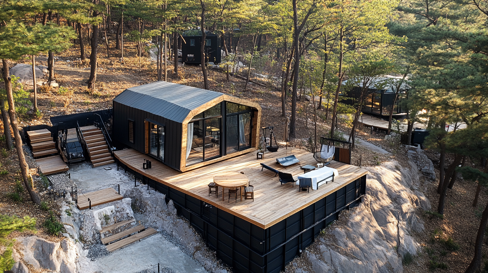

다목적 확장형 모듈러 유닛 시스템입니다. 리셉션, 레스토랑, 라운지, 스태프룸 등 캠프장의 공용 공간으로 활용됩니다.
WOCS는 중간상인을 배제하고 경쟁력 있는 가격을 제공합니다. 초기 상담부터 최종 설치까지 1:1 맞춤 서비스.
리셉션, 레스토랑, 라운지 등 캠프장에 필수적인 공용 공간을 만들어보세요.
글램핑 공간을 극대화하는 프리팹 모듈을 선택하세요